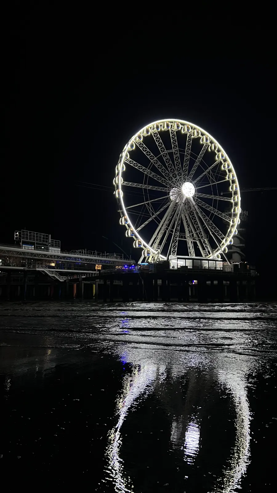
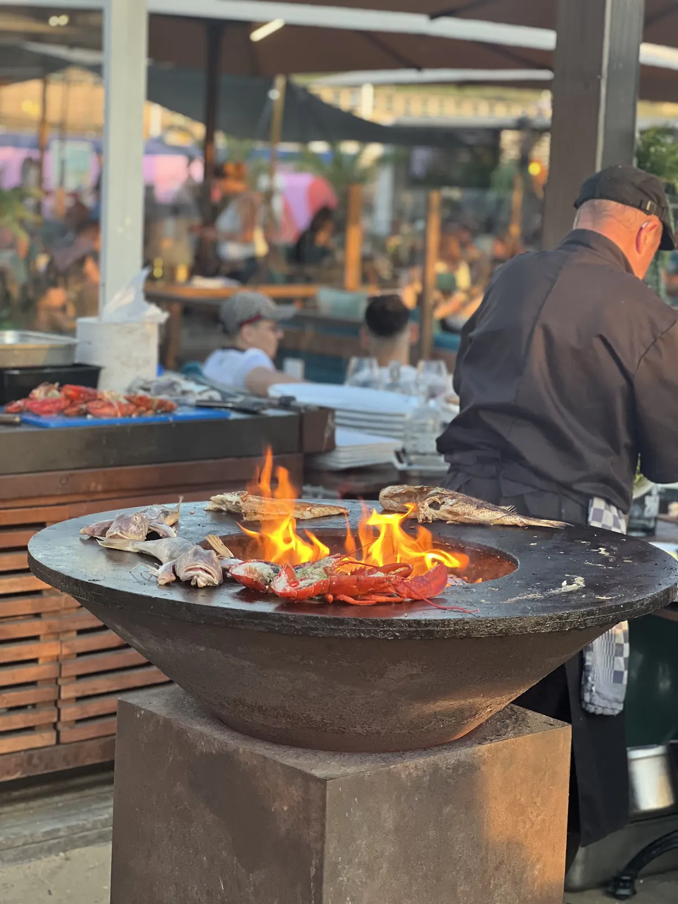
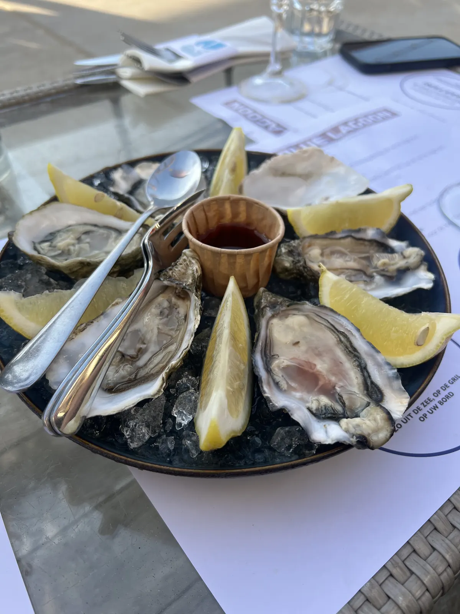

🇳🇱 The Hague & Scheveningen Guide: 11 places – Mauritshuis, Binnenhof, beach & hidden gems

Table of contents
The Hague is seat of government, art city and beach town in one. Because Scheveningen is reachable by tram, you can combine museum and sea in one day.
Prices and times are guidelines (2026).
🗺️ Map: 11 places at a glance
My story in The Hague & Scheveningen
My tip for The Hague: Vermeer’s “Girl with a Pearl Earring” at the Mauritshuis in the morning, then the tram to Scheveningen beach in the afternoon. City and sea in one day – that is my land of short distances.
This guide contains affiliate links (GetYourGuide, Omio). If you book through them I earn a small commission – you never pay a cent more. Prices and opening hours change – double-check before you go.
🆓 Free things to do
4 places in The Hague & Scheveningen you can enjoy without an entry fee or completely free (for some, only a part costs extra, e.g. a tower or museum):
At a glance
Getting to The Hague
From Germany you travel via Amsterdam or Rotterdam; from there intercity trains run to Den Haag Centraal. From there the tram takes you to Scheveningen in about 20–30 minutes. Check current timetables beforehand.
You reach The Hague by train from Amsterdam or Rotterdam; the main stations Den Haag Centraal and Den Haag HS are in the centre (check timetables beforehand). Trams and buses run at close intervals, also to Scheveningen; payment by credit card or OV chip card.
From NRW you travel best with a change, often via Arnhem or Utrecht; plan about three to four hours of travel. The city is flat – rental bikes are a good option.
1. Must-sees
Mauritshuis
Vermeer’s “Girl with a Pearl Earring” in the morning. The Mauritshuis is compact: plan 1–2.5 hours, it is far less crowded than the big museums in Amsterdam.
The Mauritshuis is a Baroque palace on the Hofvijver in which the Royal Picture Gallery hangs. Besides Vermeer’s “Girl with a Pearl Earring” you see Rembrandt’s “The Anatomy Lesson of Dr Tulp” and Carel Fabritius’s “The Goldfinch”. The collection is small but top class: you can see it calmly in one to two hours.
Tickets can be booked online with a time slot; that saves waiting. The café in the house has a lovely view of the pond. Check prices and opening times beforehand.
Tip: Book tickets with a time slot and come at opening.
Scheveningen beach & pier🆓 Free to experience
In the afternoon take the tram to the beach. The pier has a viewing deck, Ferris wheel, bungee and restaurants.
Scheveningen is The Hague’s seaside resort with a long sandy beach, promenade, the Kurhaus (a grand hotel of 1885) and the pier that juts about 400 metres into the sea. From the pier you can ride the Ferris wheel, bungee jump or eat in restaurants. The tram runs from the centre in about 20 to 30 minutes.
In summer the beach is crowded; in autumn and winter you can walk in the wind and drink hot chocolate in a beach pavilion. A fish roll or fresh herring is part of it. The beach is wide; watch the tides at high water.
Tip: Go in the afternoon, stay for sunset and eat fish at the harbour.

Binnenhof & Hofvijver🆓 Free to experience
The Binnenhof is the political heart of the Netherlands: a medieval complex of buildings in which parliament meets. The Knights’ Hall from the 13th century is the centrepiece. Because of extensive renovations the buildings are currently partly inaccessible and parliament has temporarily moved; check beforehand which tours are possible.
Even from outside the square is worthwhile: the Hofvijver, the pond in front of the Binnenhof, mirrors the buildings. A walk around the pond is especially nice in the evening.
Tip: Check tours beforehand and come to the Hofvijver in evening light.
Peace Palace
The Peace Palace is the seat of the International Court of Justice of the United Nations and the Permanent Court of Arbitration. The neo-Gothic building opened in 1913; its construction was supported by Andrew Carnegie. A visitor centre explains the history and work of the courts; tours inside the building are limited (check beforehand).
Even from outside the palace impresses with towers, garden and golden gate. Plan half an hour to an hour.
Tip: Plan the visit at the visitor centre and book a tour if possible.
Escher in Het Paleis
In the former winter palace of Queen Emma on the Lange Voorhout the museum shows the works of M. C. Escher: impossible staircases, reflections, patterns. Interactive installations make the optical illusions tangible; children especially love the house.
Plan about one to two hours; book tickets online. Check prices and times beforehand.
Tip: Perfect in rain and with children.
Kunstmuseum Den Haag – Mondrian
The Kunstmuseum (formerly Gemeentemuseum) holds the world’s largest collection of Piet Mondrian, including his last work “Victory Boogie Woogie”. Fashion, design and musical instruments are added. The building by Berlage is itself a work of art.
If you like art history, plan two to three hours. The museum lies slightly outside the centre and can be reached by tram. Check admission and times beforehand.
Tip: Take the tram and plan two to three hours.
Madurodam – the Netherlands in miniature
Madurodam is a miniature park in which you see the most famous buildings and landscapes of the Netherlands at a scale of 1:25 – windmills, canal houses, airport and port. Families with children in particular have a lot of fun.
Plan two to three hours; admission and opening times change. The park lies near Scheveningen and combines well with a beach visit.
Tip: Combine Madurodam with a beach day in Scheveningen.
2. Hidden gem
Panorama Mesdag💎 Hidden gem
A 360° painting of Scheveningen beach in the 19th century. For me one of the most underrated museums in the Netherlands.
The Panorama Mesdag is a circular painting 14 metres high and about 120 metres long from 1881, showing the beach at Scheveningen with dunes, fishermen and sea. You stand on a platform in the middle, and with sand and foreground props the illusion is so real that you believe you are standing in the dunes.
Plan half an hour to an hour; admission and opening times change. It is a quiet, underrated highlight – ideal in rain.
Tip: Perfect in rain and easy to combine with the Mauritshuis.
Scheveningen harbour – fish fresh from the boat💎 Hidden gem🆓 Free to experience
The harbour of Scheveningen is still a fishing harbour with colourful cutters, fish restaurants and small smokehouses. Try fresh herring here (traditionally raw with onions), kibbeling and prawns. At weekends it is lively.
A walk along the harbour leads you to pubs and cafés with a view of the boats. Prices change; ask beforehand about the price of fish by weight.
Tip: Eat herring or kibbeling at the harbour and drink a coffee overlooking the boats.

Haagse Markt – multicultural market💎 Hidden gem🆓 Free to experience
The Haagse Markt is considered one of the largest open-air markets in the Netherlands: hundreds of stalls with fruit, vegetables, fabrics, clothing, spices and ready meals from all over the world. Here you see the multicultural The Hague.
The market is open on certain days of the week (usually Tuesday to Saturday; check beforehand). Come in the morning with cash and eat something warm from a stall.
Tip: Come in the morning with cash and hungry.
Noordeinde Palace & Haagse Hopjes💎 Hidden gem
Noordeinde Palace is the king’s working palace. You see it from outside, with guard and square in front; around the palace lie lovely lanes with boutiques, cafés and galleries. The district is quieter than the Binnenhof.
A small souvenir also belongs to The Hague: Haagse Hopjes, caramel sweets with coffee flavour that originated in the city. You find them in shops and bakeries.
Tip: Take Hopjes with you as a souvenir.
What makes the Netherlands special
Amsterdam is the capital, but the government sits in The Hague. More on the country and history in my Amsterdam guide.
📍 Save this guide to Google Maps
1. Quick: open as a route
2. Permanent: as your own map (2 minutes)
- Download the file with all pins (KML button below).
- Open Google My Maps → “Create a new map” → “Import” → choose the file.
- Done – every place sits exactly where it should, with number, tip and a link back to the guide.
- In the Google Maps app the map appears under “Saved” → “Maps”, also on the go.
⬇️ All pins for Google Maps (KML) ⬇️ Download place list (CSV)
3. Save one by one
Your plan
Day 1: City and sea
- Morning – Mauritshuis and Hofvijver, Binnenhof from outside
- Midday – Panorama Mesdag or Escher in Het Paleis
- Afternoon – tram to Scheveningen, beach and pier
- Evening – fish at the harbour, sunset on the beach
FAQ
Is one day enough in The Hague?
Yes, if you combine museum and beach.
How do I get to Scheveningen?
By tram from The Hague in about 20–30 minutes.
How many days do you need in The Hague?
Is the Peace Palace accessible?
🗺️ All places on my map → More guides and reels on Instagram: @hiddengem.atlas
Share this guide: On WhatsApp